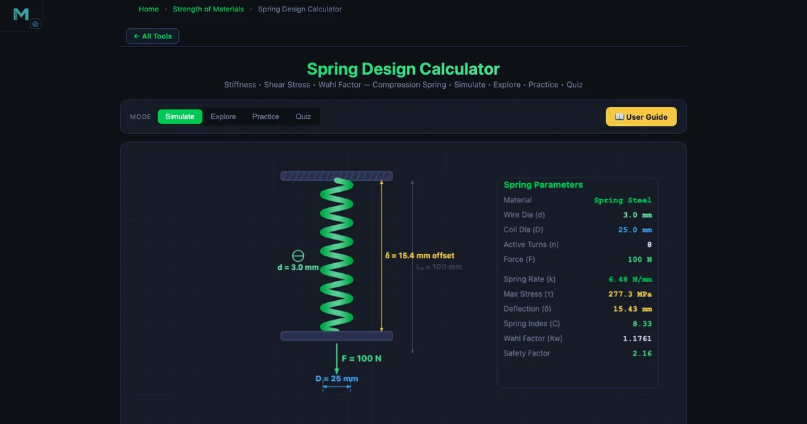

Helical Spring Design Calculator — Spring Stiffness, Wahl Factor, and Shear Stress

- Helical spring stiffness (rate) is k = Gd⁴ / (8D³n), where G is shear modulus, d is wire diameter, D is mean coil diameter, and n is the number of active coils — d dominates because it enters to the fourth power.
- Real peak shear stress is τ = K_w · 8FD / (πd³), where the Wahl factor K_w = (4C−1)/(4C−4) + 0.615/C corrects for coil curvature and direct shear, with spring index C = D/d kept between 4 and 12.
- Solid length is L_s = N_t · d; for squared-and-ground ends N_t = n + 2, and the working deflection must always leave a clash allowance above L_s.
Every mechanical system that needs to store energy, absorb shock, or apply a controlled force relies on springs. Automotive valve springs, pen retractors, industrial safety relief valves, and the return mechanisms in pneumatic cylinders — these are all helical springs, and every one of them started as a set of four numbers: wire diameter, coil diameter, number of turns, and material. Getting those numbers right means knowing the stiffness formula, the Wahl correction factor, and when to check for yielding. This guide works through the complete design procedure for compression springs, then shows how to use the Spring Design Calculator to verify and explore the results interactively.
The Three Spring Types — Choosing the Right One
Helical springs come in three fundamental forms, and the choice affects both the loading direction and the governing equations.
Compression springs are open-coil springs that resist axial compression. The coils do not touch when unloaded. They are the most common spring type and the focus of this guide — found in automotive suspensions, valve mechanisms, mattresses, and virtually every switch or button that returns to its starting position.
Extension springs resist axial tension. The coils are wound tightly closed with an initial preload (initial tension) that must be overcome before the coils begin to separate. The stiffness formula is identical to compression springs, but the force-deflection curve has a non-zero intercept at F = F⊂0;. Trampoline springs and garage door counterbalances are classic examples.
Torsion springs work by twisting about their own axis rather than compressing or stretching. The restoring moment follows
\[M = \frac{E \cdot d^4 \cdot \theta}{64 \cdot D \cdot n} \cdot \frac{\pi}{180}\]
where \(\theta\) is the angular deflection in degrees. Clothespins, door hinges, and clipboard mechanisms use torsion springs. The rate is expressed in N·mm per degree rather than N/mm.
The calculator covers all three types. Switch the spring type selector and the formulas, diagrams, and result cards update instantly.
Material Properties — G and τyield Are Everything
All helical spring formulas depend on the shear modulus G of the wire. The calculator includes three common engineering materials:
- Spring Steel: G = 80 000 MPa, τyield = 600 MPa. The standard choice for most industrial compression springs. High stiffness per unit weight, good fatigue resistance when shot-peened.
- Stainless Steel: G = 69 000 MPa, τyield = 500 MPa. About 14 % lower shear modulus than spring steel, so a stainless spring of identical geometry is softer. Used where corrosion resistance matters — food processing, marine, and medical equipment.
- Phosphor Bronze: G = 41 000 MPa, τyield = 300 MPa. The softest of the three by a wide margin. Used in electrical contacts and applications requiring non-magnetic, corrosion-resistant springs. A phosphor bronze spring needs roughly twice the wire volume of a spring-steel equivalent to achieve the same stiffness.
If you need a spring with identical k for all three materials, you must increase d or decrease D as you move from spring steel to phosphor bronze. The calculator makes this trade-off visible: change the material and watch k drop, then adjust d until k returns to target.
Spring Index — The Shape Ratio That Controls Everything
The spring index C = D/d is the ratio of mean coil diameter to wire diameter. It is the single most important shape parameter in spring design, and the recommended range is
\[4 \leq C \leq 12\]
Below C = 4, the coils are very tightly wound. Stress concentrations become severe and the spring is difficult to coil without cracking the wire. Above C = 12, the spring is slender relative to its wire thickness. It may buckle under axial load like a column, and coiling tolerances are hard to maintain. Most production springs fall between C = 6 and C = 9.
The spring index feeds directly into the Wahl correction factor, which is why getting C into the right range matters for both manufacturing and stress accuracy.
Spring Stiffness — The Four-Variable Relationship
The stiffness (spring rate) of a helical compression spring is
\[k = \frac{G d^4}{8 D^3 n} \quad \text{[N/mm]}\]
Four variables, and their exponents tell you exactly how to tune stiffness:
- Wire diameter d (exponent 4, numerator): The dominant variable. Doubling d multiplies k by 2&sup4; = 16. Halving d divides k by 16. This is why wire diameter selection is the first decision in spring design.
- Mean coil diameter D (exponent 3, denominator): Increasing D rapidly softens the spring. Doubling D divides k by 8. Larger coil diameter also increases solid length for a given number of turns.
- Active coils n (exponent 1, denominator): Stiffness decreases linearly with active coil count. Twice the coils means half the stiffness. Adding turns is the simplest way to soften a spring without changing wire or coil size.
- Shear modulus G (exponent 1, numerator): Stiffness scales linearly with G. Switching from spring steel to phosphor bronze (G drops by factor 1.95) roughly halves stiffness, all else equal.
This is directly related to Hooke’s Law: the spring force F = k δ is linear for small deflections, with k as the proportionality constant. For a deeper look at how spring constant connects to energy storage and force-extension linearity, see our companion article on Hooke’s Law and spring constant.
Wahl Correction Factor — Real Stress Is Higher Than You Think
A naive shear stress calculation for a coiled wire uses only the applied torque. Two additional effects push the actual stress higher: the curvature of the coil concentrates stress on the inner face of the wire, and the transverse shear component of the applied force adds a direct shear term. A.M. Wahl combined both corrections into a single factor:
\[K_w = \frac{4C - 1}{4C - 4} + \frac{0.615}{C}\]
For a spring with C = 6.67 (say D = 20 mm, d = 3 mm):
\[K_w = \frac{4 \times 6.67 - 1}{4 \times 6.67 - 4} + \frac{0.615}{6.67} = \frac{25.68}{22.68} + 0.0922 = 1.132 + 0.092 = 1.224\]
The corrected maximum shear stress is then
\[\tau = K_w \cdot \frac{8 F D}{\pi d^3} \quad \text{[MPa]}\]
Without K⊂w;, you would underestimate peak stress by about 22 % in this example — enough to push a fatigue-loaded spring into failure if you had sized it on the uncorrected value.
Solid Length — The Geometric Hard Limit
When a compression spring is fully compressed until all coils touch, it reaches its solid length. No further deflection is possible. The formula is
\[L_s = N_t \cdot d\]
where N⊂t; is the total coil count. End conditions determine how N⊂t; relates to the active coil count n. For squared-and-ground ends — the most common industrial end treatment, where the end coils are compressed flat and ground square to provide a flat bearing surface — two inactive end coils are added:
\[N_t = n + 2 \quad \Rightarrow \quad L_s = (n + 2) \cdot d\]
A spring with n = 8 active coils and squared-and-ground ends has N⊂t; = 10 and, for d = 3 mm, a solid length of L⊂s; = 30 mm. In service, the maximum working deflection must leave a clash allowance — typically 10–15 % of the solid length — between the compressed length and L⊂s;, so the coils never clash under dynamic loading.
The torsional shear analogy carries over to shaft design: a solid shaft transmitting torque also develops a maximum shear stress on its outer surface. The formula structure is nearly identical. If you want to see that side by side, the shaft torsion and shear stress guide walks through the same mechanics from a shaft design perspective.
Worked Example — Spring Steel, d = 3 mm, D = 20 mm, n = 10, F = 50 N
A compression spring is made from Spring Steel (G = 80 000 MPa, τyield = 600 MPa). Wire diameter d = 3 mm, mean coil diameter D = 20 mm, 10 active coils, load F = 50 N. Compute k, C, K⊂w;, τmax, and deflection δ.
Step 1: Spring index.
\[C = \frac{D}{d} = \frac{20}{3} = 6.67\]
Within the recommended 4–12 range. Good.
Step 2: Spring stiffness.
\[k = \frac{G d^4}{8 D^3 n} = \frac{80\,000 \times 3^4}{8 \times 20^3 \times 10} = \frac{80\,000 \times 81}{8 \times 8\,000 \times 10} = \frac{6\,480\,000}{640\,000} = 10.13 \ \text{N/mm}\]
Step 3: Wahl correction factor.
\[K_w = \frac{4 \times 6.67 - 1}{4 \times 6.67 - 4} + \frac{0.615}{6.67} = \frac{25.68}{22.68} + 0.0922 = 1.224\]
Step 4: Maximum shear stress.
\[\tau = K_w \cdot \frac{8 F D}{\pi d^3} = 1.224 \times \frac{8 \times 50 \times 20}{\pi \times 27} = 1.224 \times \frac{8\,000}{84.82} = 1.224 \times 94.32 = 115.4 \ \text{MPa}\]
The yield shear stress for Spring Steel is 600 MPa, so the safety factor is 600 / 115.4 = 5.2. The spring is well within yield. For a fatigue-loaded application you would compare τ against the endurance limit rather than yield, and the higher Wahl factor becomes the margin between a surviving spring and a cracked one.
Step 5: Deflection under 50 N.
\[\delta = \frac{8 F D^3 n}{G d^4} = \frac{8 \times 50 \times 8\,000 \times 10}{80\,000 \times 81} = \frac{32\,000\,000}{6\,480\,000} = 4.94 \ \text{mm}\]
Alternatively, δ = F/k = 50 / 10.13 = 4.94 mm. Both routes agree exactly, as they should — the deflection formula is just the stiffness formula inverted.
Shot Peening — A 20–50 % Fatigue Life Gain for Free
A workshop that produces valve springs for high-cycle applications typically runs every spring through a shot-peening machine after coiling. Small steel or glass beads are blasted at the spring surface under controlled pressure, plastically deforming a thin skin layer. This induces residual compressive stresses at the surface — exactly where the Wahl factor concentrates the peak tensile stress during loading. The compressive residual stress partially cancels the applied tensile stress, raising the effective fatigue limit by 20–50 %.
Shot peening does not change k, C, or any of the stiffness formulas. It changes only the fatigue resistance. For a spring that will cycle tens of millions of times — an engine valve spring runs at 30 million cycles per year — that improvement is the difference between a spring that lasts two years and one that lasts four.
Classroom Scenario — Selecting a Return Spring for a Pneumatic Valve
Consider a vocational class working on pneumatic systems. The brief: design a return spring that closes a valve when air pressure drops. The requirements are k = 8–12 N/mm, free length 60 mm, working envelope diameter 24 mm maximum (so D ≤ 21 mm accounting for wire), and the spring must survive 2 million cycles without fatigue failure.
Students open the calculator, select compression spring and Spring Steel. They try d = 3 mm, D = 20 mm, n = 10. The stiffness reads 10.13 N/mm — inside the target window. Spring index C = 6.67, inside the 4–12 range. Solid length with squared-and-ground ends: N⊂t; = 12, L⊂s; = 36 mm — leaves 24 mm of working stroke before clash, more than enough for the 10 mm valve travel specified. They check shear stress at the maximum operating force (120 N, worst-case pressure spike): τ = 276 MPa against a yield shear of 600 MPa. Safety factor of 2.2. For a fatigue application they note that shot peening would push the endurance limit high enough to cover the stress amplitude comfortably. All boxes checked. The design is recorded and handed in — with every number traceable to a formula, not just a table lookup from a textbook appendix.
That is exactly what the calculator is designed to enable: fast iteration between parameters, with formulas visible at every step so students understand what they changed and why the output moved.
Try It Yourself
All tools below are free — no account, no download, works on any modern browser.
Key Takeaways
- Spring stiffness k = Gd&sup4; / (8D³n) — wire diameter d has the largest effect because it enters to the fourth power.
- Spring index C = D/d should stay between 4 and 12; below 4 causes manufacturing stress concentrations, above 12 risks lateral buckling.
- The Wahl factor K⊂w; = (4C−1)/(4C−4) + 0.615/C corrects for coil curvature and direct shear; never omit it in a stress check.
- Maximum shear stress τ = K⊂w; × 8FD / (πd³) must stay well below τyield for static loads, and below the fatigue limit for cyclic applications.
- Solid length L⊂s; = N⊂t; × d; for squared-and-ground ends N⊂t; = n + 2. Always leave a clash allowance in service.
- Worked example (d = 3, D = 20, n = 10, Spring Steel, F = 50 N): k = 10.13 N/mm, K⊂w; = 1.22, τ = 115.4 MPa, δ = 4.94 mm — safety factor on yield = 5.2.
- Shot peening increases fatigue life by 20–50 % by inducing surface compressive residual stress at the highest-stress location on the wire inner face.
Frequently Asked Questions
What is the formula for helical spring stiffness?
The spring stiffness (rate) k is calculated using k = Gd&sup4; / (8D³n), where G is the shear modulus of the wire material in MPa, d is the wire diameter in mm, D is the mean coil diameter in mm, and n is the number of active coils. Wire diameter has the greatest influence because it appears to the fourth power in the numerator. Doubling the wire diameter increases stiffness by a factor of 16, while doubling the mean coil diameter reduces stiffness by a factor of 8.
What is the Wahl correction factor and why is it needed?
The Wahl correction factor K⊂w; = (4C−1)/(4C−4) + 0.615/C accounts for two effects that the simple torsion formula misses: the stress concentration caused by the curvature of the coil wire, and the direct shear component of the applied force. Here C = D/d is the spring index. K⊂w; is always greater than 1 and increases as C decreases — tighter coils have higher stress concentrations. For a spring index of 6, K⊂w; ≈ 1.25; for C = 10, K⊂w; ≈ 1.14. Using K⊂w; ensures that fatigue and yield checks are accurate, not optimistically low.
What spring index range is recommended for helical springs?
The recommended range for the spring index C = D/d is 4 ≤ C ≤ 12. A spring index below 4 means very tight coils — high stress concentrations, difficult to coil, and prone to cracking during manufacture. A spring index above 12 means very open coils — the spring is slender and prone to buckling under load, and coiling tolerances become difficult to maintain. Most production compression springs fall between C = 6 and C = 9 for a balance of stress performance and manufacturability.
How is the solid length of a compression spring calculated?
Solid length L⊂s; = N⊂t; × d, where N⊂t; is the total number of coils and d is the wire diameter. For squared-and-ground ends (the most common industrial end condition), N⊂t; = n + 2, where n is the number of active coils. For example, a spring with n = 8 active coils and squared-and-ground ends has N⊂t; = 10 total coils. With d = 3 mm, L⊂s; = 10 × 3 = 30 mm. The solid length sets the minimum operating length of the spring — the applied deflection must never compress the spring to its solid length in service.
What are the three spring types in the Spring Design Calculator?
The Spring Design Calculator covers three helical spring types. Compression springs resist axial compression — the most common type, used in valves, automotive suspensions, and switches. Extension springs resist axial tension; they have closed coils wound with initial tension that must be overcome before the coils begin to separate. Torsion springs resist angular rotation about the spring axis, storing energy when twisted; their rate is expressed in N·mm per degree and the governing formula is M = E × d&sup4; × θ / (64 × D × n × 180/π). Each type has its own design equations and failure mode, but all share the same material properties for G and τyield.
Spring design is one of those topics where the formulas are compact but the implications run deep. The d&sup4; term in the stiffness equation explains why a 1 mm change in wire diameter can make a spring feel completely different to the hand — it is not a linear change but a fourth-power one. The Wahl factor explains why textbooks always say “never ignore curvature correction in fatigue design” — a 20 % stress underestimate on a component cycling 30 million times per year is not a rounding error, it is a crack. Once you have worked through the numbers once — as in the 50 N example above — the formula stops feeling abstract and starts feeling like something you can actually control.
Open the Spring Design Calculator, load the compression spring mode, and try changing d from 3 mm to 4 mm. Watch what happens to k. That single observation will tell you more about spring mechanics than two paragraphs of text.